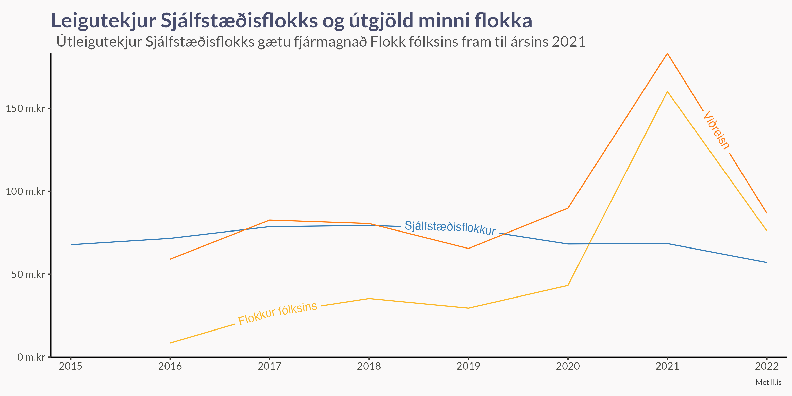

Opinber framlög
Stjórnmálasamtök sem hafa fengið a.m.k. einn mann kjörinn á þing eða náð að lágmarki 2,5% atkvæða eiga rétt til framlaga. Það framlag skiptist hlutfallslega milli flokka eftir atkvæðamagni í næstliðnum kosningum. Fjármála- og efnahagsráðuneytið fer með framkvæmd greiðslna á þessu framlagi.
Sveitarfélag skal veita stjórnmálasamtökum, sem fengið hafa a.m.k. einn mann kjörinn í sveitarstjórn eða hlotið hið minnsta 5% atkvæða í næstliðnum sveitarstjórnarkosningum, árleg fjárframlög til starfsemi sinnar. Gilda hér um ákvæði 2. mgr. 5.gr. laga nr. 162/2006. Skal framlögum úthlutað í hlutfalli við atkvæðamagn. Miða skal við að greiða 175 kr. á hvern íbúa sem lögheimili á í sveitarfélaginu 1. janúar á ári hverju. Þessi fjárhæð tekur breytingum árlega miðað við vísitölu neysluverðs í október ár hvert og er grunnvísitalan 472,2 stig, m.v. október 2019.
Fyrirtæki/lögaðilar og einstaklingar
Venjulegir aðilar (fólk og fyrirtæki) mega styrkja hvern flokk um 550.000 krónur ár hvert, heimildin var hækkuð úr 400.000 með lagabreytingu árið 2018.
Aðrar tekjur
Aðrar tekjur eru meðal annars útleiga á fasteignum (t.d. veislusölum), miðasala á viðburði, sala á auglýsingaplássi, eða önnur útseld þjónusta. Örfáir flokkar hafa slíkar tekjur, en Sjálfstæðisflokkur fær langmestar slíkar tekjur. Við munum líka sjá neðar að flokkurinn á meirihluta allra eigna flokkanna, þar á meðal fasteignir.
Það er áhugavert að sjá að tekjur Sjálfstæðisflokks af útleigu eru svo miklar að þær myndu nægja til að fjármagna allt starf Flokks fólksins.

Kostnaður
Við sjáum að útgjöld flokkanna aukast á árum sem kosningar fara fram.
Eignir, skuldir og eigið fé
Eignir
Never let a good crisis go to waste
Winston Churchill
Sjálfstæðisflokkur þekkir svo sannarlega orð Winston, því milli 2007 og 2008 jukust eignir hans um rúmlega 300 milljónir króna á föstu verðlagi. Þetta var ekki bara sparnaður í kreppu heldur fjárfestingar, enda jukust fastafjármunir flokksins um rúmlega 200 milljónir króna á sama tímabili.
Skuldir
Það er ekki nóg að vita bara hverjar eignir flokkanna eru, við viljum líka vita hvort þær séu fjármagnaðar með lántöku eða hreinum eignum. Á árunum 2008 - 2015 hefur Sjálfstæðisflokkur tekið mikið af lánum á meðan aðrir flokkar reyndu að borga sín niður.
Eigið fé
Með þekkingu okkar um eignir og skuldir að vopni getum við skoðað eigið fé flokkanna og fengið svör við spurningunni
Hverjar eru eignirnar umfram skuldirnar?
Við sjáum til dæmis að Framsóknarflokkur hefur haft neikvætt eigið fé frá 2007 til 2020.
Auk þess sjáum við að árið 2007 átti Sjálfstæðisflokkur 100% alls eigin fjár stjórnmálaflokka, en árið 2020 er sú tala dottin niður í 43,5%.